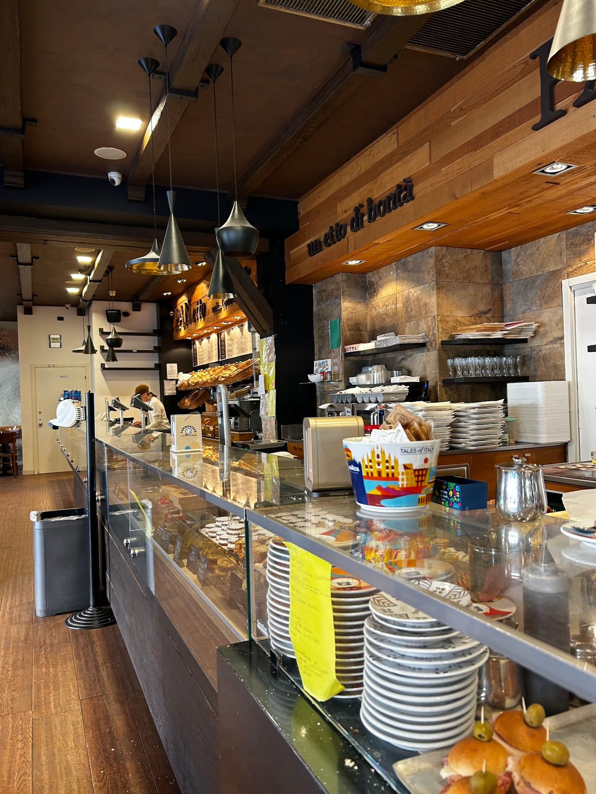
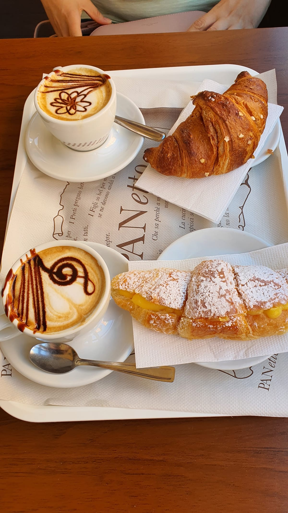
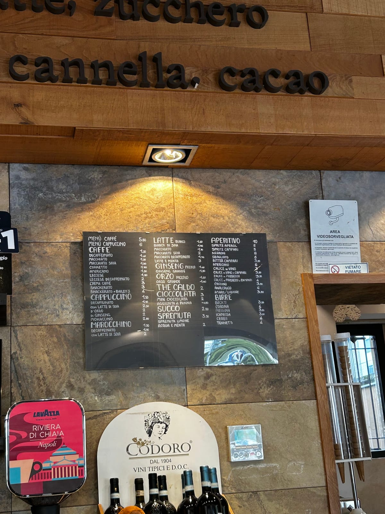

F.lli Lo Bianco · viale Suzzani 248 · Niguarda, Milano
Un etto di bontà.
È scritto a lettere di legno sopra il nostro banco. Sull'insegna fuori, invece, abbiamo esagerato: chili di bontà.
- 1985l'anno che sta nel nostro marchio
- 975recensioni su Google
- 6–20quattordici ore, senza chiusura
- 1,20euro, il caffè
Sul tondo dell'insegna
Non solo pane
Lo abbiamo scritto sul marchio nel 1985 e da allora il banco si è solo allungato. Al mattino ci sono le brioche e le paste, a mezzogiorno le pizze, le focacce e i panini, e il pane si prende a qualsiasi ora fino a sera.
Nelle recensioni le parole che tornano di più non sono una sola: dolci, pizze, focacce, brioche. In quest'ordine.
- Pane di giornata
- Brioche e paste
- Brioche vegane
- Pizze e pizzette
- Focacce
- Panini
- Torte e dolci
- Primi e secondi


Dalle sei del mattino
Cappuccino e brioche con la crema abbondante
È il nome esatto con cui Google elenca il nostro piatto più richiesto, e non l'abbiamo scelto noi: l'hanno scritto i clienti. La crema abbondante è una cosa su cui non si tratta.
C'è anche la brioche vegana — in una recensione ne viene consigliata una al mango. Cambiano, quindi conviene chiedere al banco cosa c'è oggi.
Il listino appeso al muro
I prezzi sono quelli di un quartiere
Non li abbiamo mai spostati per la vetrina. Sono quelli scritti sulla lavagna dietro il banco.
- Caffè1,20
- Cappuccino1,50
- Marocchino1,50
- Latte bianco1,20
- Orzo piccolo1,60
- Ginseng piccolo1,60
- Cioccolata3,00
- Spremuta3,50
- Menù caffè5,50
- Menù cappuccino6,00

Ci sono anche l'aperitivo e le birre, sulla stessa lavagna. Una colazione mista per due, in una recensione, viene descritta a poco più di sei euro.
Lo dicono loro
Novecentosettantacinque volte
«Sarà che in questo quartiere sono cresciuta, ma qui mi sento proprio a casa. Golosità e gentilezza. Consiglio vivamente la brioches vegana al mango e l'eccellente focaccia. Ma c'è davvero l'imbarazzo della scelta.»
Roberta Dedotti«Colazione mista salato/dolce per 2, poco più di 6 euro. Fantastico! A parte il rapporto qualità prezzo qui trovi anche comodità e personale gentilissimo.»
Kirullos Soliman«Definitely affordable prices and a very tasty breakfast options!! The place is full of locals and people who work in the neighborhood during the day.»
Ekin«Tanta buona scelta di piatti (primi e secondi) e varietà pizze, focacce e panini»
Recensione su Google«Un posto si fa colazione si mangia si prende pane e pasta pizza dolci e salati»
Recensione su Google
Il forno, di fuori e di dentro
Dove siamo
Viale Suzzani 248, all'angolo
Siamo sull'angolo col semaforo, a Niguarda. Il civico è 248, non 249 come scrivono alcuni elenchi.
Controllo gli orari…
| Lunedì | 06:00 – 20:00 |
|---|---|
| Martedì | 06:00 – 20:00 |
| Mercoledì | 06:00 – 20:00 |
| Giovedì | 06:00 – 20:00 |
| Venerdì | 06:00 – 20:00 |
| Sabato | 06:30 – 20:00 |
| Domenica | chiuso |
La mappa è di Google: aprendola, Google riceve il tuo indirizzo IP e può usare i suoi cookie.
Quello che ci chiedono al banco
A che ora aprite?
Alle sei del mattino, dal lunedì al venerdì. Il sabato alle sei e mezza. Si chiude alle otto di sera, tutti i giorni. La domenica siamo chiusi.
Fate solo pane?
No, e c'è scritto anche sulla nostra insegna: non solo pane. Facciamo brioche e paste, pizze, focacce, panini, torte e dolci, e a pranzo anche primi e secondi.
Quanto costa un caffè?
Un euro e venti. Il cappuccino un euro e cinquanta. C'è anche il menù caffè a cinque euro e cinquanta e quello con cappuccino a sei.
Avete brioche vegane?
Sì. Una cliente in una recensione consiglia in particolare quella al mango. Chiedete al banco quali ci sono oggi, perché cambiano.
Si può fare colazione seduti?
Sì, ci sono i tavolini: c'è chi fa colazione, chi si ferma a pranzo e chi passa solo a prendere il pane.
Dove siete esattamente?
In viale Giovanni Suzzani 248, a Niguarda, all'angolo col semaforo. Il civico è 248, non 249.